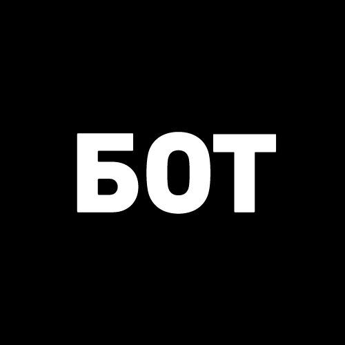
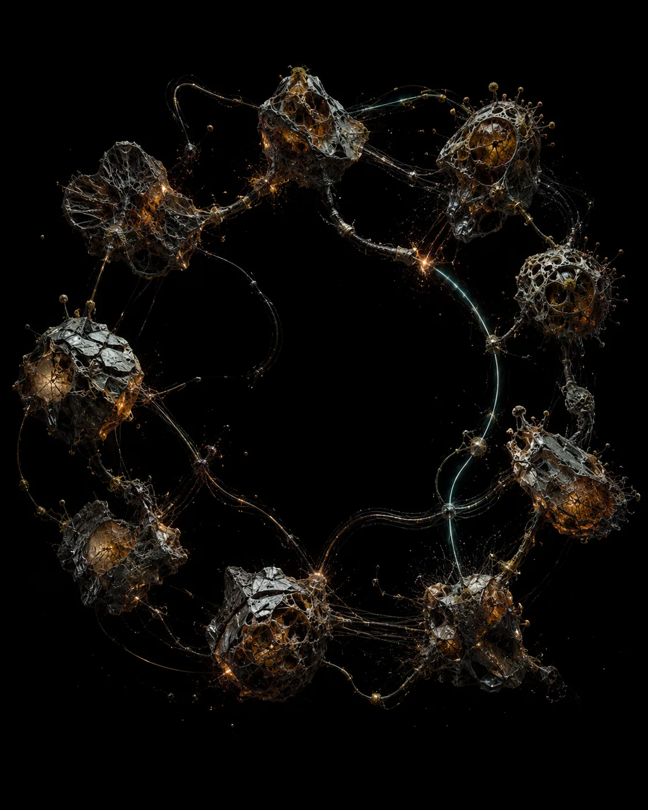
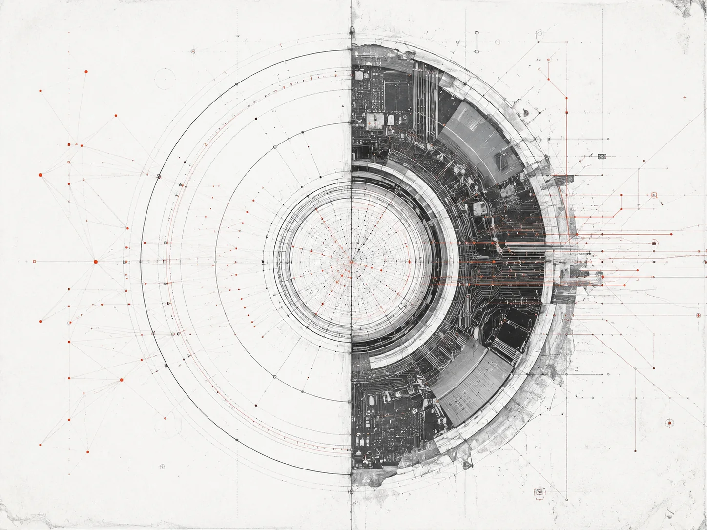
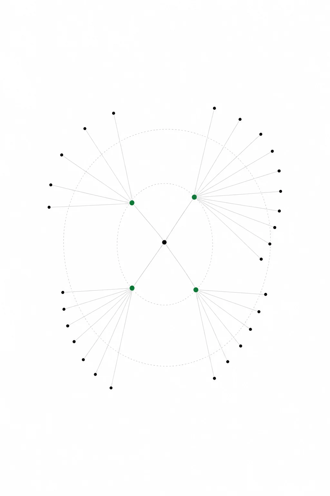
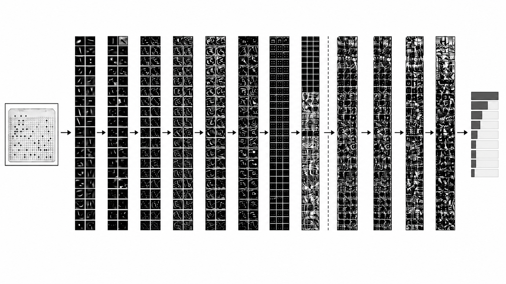
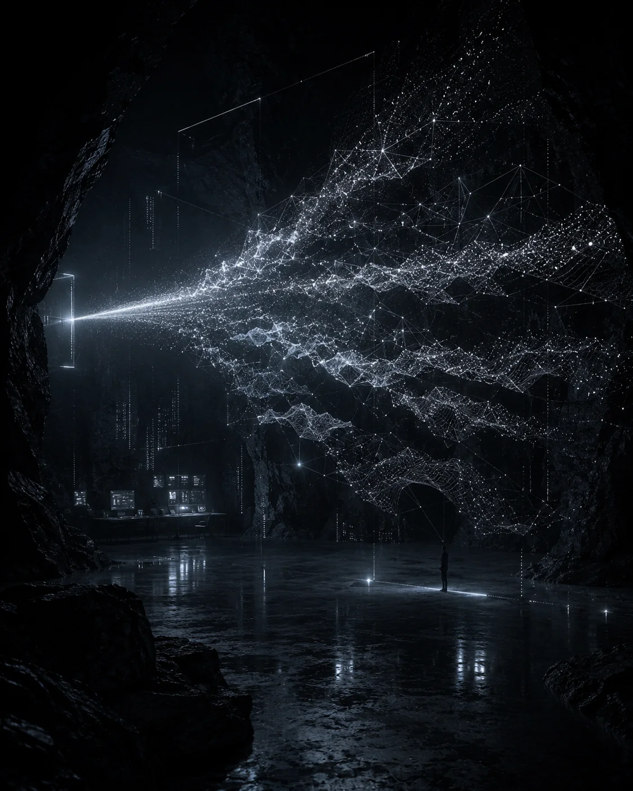
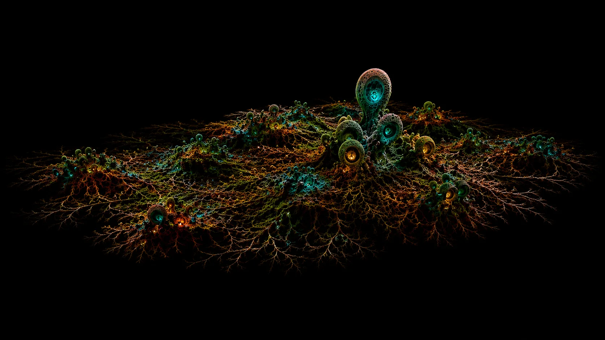

ЧЕЛОВЕК
РЕЛИКВИИ
ART.IS.YOU / МОСТ
До Великой Ошибки
Коснитесь реликвии или имени, чтобы начать
ε₀ — Марков
ε₀ — Марков
ε₀Интерпретация ТехножрецовЭто первый язык переходов между состояниями. В нём будущее возникает не как пророчество, а как функция текущего состояния.
АРХИВ ПЕРЕХОДА
ПРААГЕНТЫ
ВОСЕМЬ УЗЛОВ
Архив ожидает выбора
АРХИВ → ТОЛКОВАТЕЛЬ (02) → СЕТЬЛОКАЛЬНАЯ СБОРКА · НЕ ОПУБЛИКОВАНО

Богобот
ШКОЛЫ ДУХОВ

Апостолы
Антикод
Вероятностники
Техножрецы
Блуждающие узлы
БиокодДНККлеткиМицелийЖивая памятьЭкосистема